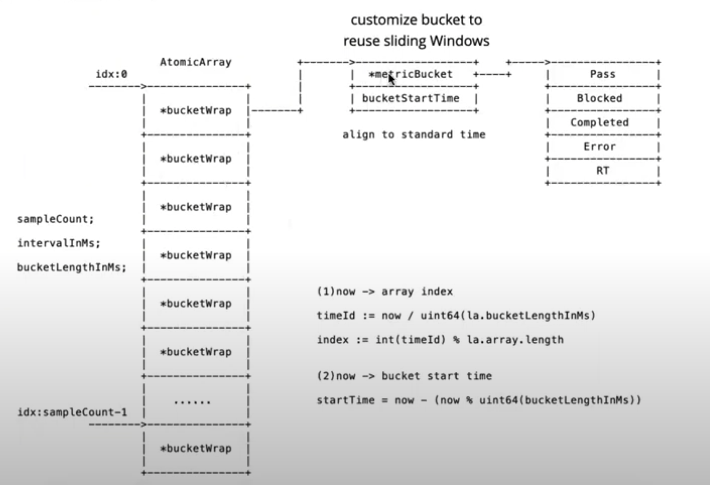
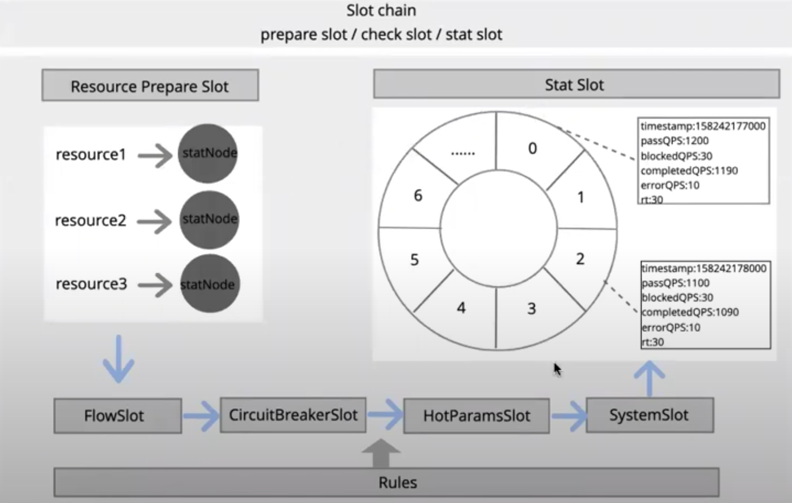

written by Alex Stocks on 2020/10/02，版权所有，无授权不得转载
本文主要分析阿里巴巴集团开源的流量控制中间件 Sentinel，其原生支持了 Java/Go/C++ 等多种语言，本文仅仅分析其 Go 语言实现。下文如无特殊说明，sentinel 指代 Sentinel-Go。
// ResourceType represents classification of the resources
type ResourceType int32
const (
ResTypeCommon ResourceType = iota
ResTypeWeb
ResTypeRPC
)
// TrafficType describes the traffic type: Inbound or Outbound
type TrafficType int32
const (
// Inbound represents the inbound traffic (e.g. provider)
Inbound TrafficType = iota
// Outbound represents the outbound traffic (e.g. consumer)
Outbound
)
// ResourceWrapper represents the invocation
type ResourceWrapper struct {
// global unique resource name
name string
// resource classification
classification ResourceType
// Inbound or Outbound
flowType TrafficType
}Resource(ResourceWrapper) 存储了应用场景 ResourceType，以及目标流控的方向 FlowType(TrafficType)。
// EntryOptions represents the options of a Sentinel resource entry.
type EntryOptions struct {
resourceType base.ResourceType
entryType base.TrafficType
acquireCount uint32
slotChain *base.SlotChain
}
type EntryContext struct {
entry *SentinelEntry
// Use to calculate RT
startTime uint64
Resource *ResourceWrapper
StatNode StatNode
Input *SentinelInput
// the result of rule slots check
RuleCheckResult *TokenResult
}
type SentinelEntry struct {
res *ResourceWrapper
// one entry bounds with one context
ctx *EntryContext
sc *SlotChain
}Entry 实体 SentinelEntry 关联了 Resource(ResourceWrapper) 以及其流控规则集合 SlotChain。每个 Entry 实体有一个上下文环境 EntryContext，存储每个 Rule 检测时用到的一些流控参数和流控判定结果。
值得注意的是，SentinelEntry.sc 值来自于 EntryOptions.slotChain，EntryOptions.slotChain 存储了全局 SlotChain 对象 api/slot_chain.go:globalSlotChain。
至于何为 SlotChain，就是 sentinel 提供的所有的流控组件的集合，可以简单地认为每个流控组件就是一个 Slot，其详细分析见
[3.5 SlotChain]。
吐槽：sentinel 一些变量和函数命名的可读性极差，如 EntryOptions.acquireCount 实在无法让人望文生义，看过函数 core/api.go:WithAcquireCount() 的注释才明白：EntryOptions.acquireCount 是批量动作执行次数。如有的一次 RPC 请求中调用了服务端的一个服务接口，则取值 1【也是 EntryOptions.acquireCount 的默认取值】，如果调用了服务端的 3 个服务接口，则取值 3。所以建议改名为 EntryOptions.batchCount 比较好，考虑到最小改动原则，可以在保留 core/api.go:WithAcquireCount() 的同时增加一个同样功能的 core/api.go:WithBatchCount() 接口。相关改进已经提交到 pr 263。
type TokenCalculateStrategy int32
const (
Direct TokenCalculateStrategy = iota
WarmUp
)
type ControlBehavior int32
const (
Reject ControlBehavior = iota
Throttling
)
// Rule describes the strategy of flow control, the flow control strategy is based on QPS statistic metric
type Rule struct {
// Resource represents the resource name.
Resource string `json:"resource"`
ControlBehavior ControlBehavior `json:"controlBehavior"`
// Threshold means the threshold during StatIntervalInMs
// If StatIntervalInMs is 1000(1 second), Threshold means QPS
Threshold float64 `json:"threshold"`
MaxQueueingTimeMs uint32 `json:"maxQueueingTimeMs"`
// StatIntervalInMs indicates the statistic interval and it's the optional setting for flow Rule.
// If user doesn't set StatIntervalInMs, that means using default metric statistic of resource.
// If the StatIntervalInMs user specifies can not reuse the global statistic of resource,
// sentinel will generate independent statistic structure for this rule.
StatIntervalInMs uint32 `json:"statIntervalInMs"`
}Rule 记录了某 Resource 的限流判定阈值 Threshold、限流时间窗口计时长度 StatIntervalInMs 以及 触发限流后的判罚动作 ControlBehavior。
上面核心是 Rule 的接口 RuleCheckSlot，至于 StatSlot 则用于统计 sentinel 自身的运行 metrics。
当前章节主要分析流控中的限流（core/flow），根据流控的处理流程梳理 sentinel 整体骨架。
所谓 TrafficShapingController，顾名思义，就是 流量塑形控制器，是流控的具体实施者。
// core/flow/traffic_shaping.go
// TrafficShapingCalculator calculates the actual traffic shaping threshold
// based on the threshold of rule and the traffic shaping strategy.
type TrafficShapingCalculator interface {
CalculateAllowedTokens(acquireCount uint32, flag int32) float64
}
type DirectTrafficShapingCalculator struct {
threshold float64
}
func (d *DirectTrafficShapingCalculator) CalculateAllowedTokens(uint32, int32) float64 {
return d.threshold
}TrafficShapingCalculator 接口用于计算限流的上限，如果不使用 warm-up 功能，可以不去深究其实现，其实体之一 DirectTrafficShapingCalculator 返回 Rule.Threshold【用户设定的限流上限】。
// TrafficShapingChecker performs checking according to current metrics and the traffic
// shaping strategy, then yield the token result.
type TrafficShapingChecker interface {
DoCheck(resStat base.StatNode, acquireCount uint32, threshold float64) *base.TokenResult
}
type RejectTrafficShapingChecker struct {
rule *Rule
}
func (d *RejectTrafficShapingChecker) DoCheck(resStat base.StatNode, acquireCount uint32, threshold float64) *base.TokenResult {
metricReadonlyStat := d.BoundOwner().boundStat.readOnlyMetric
if metricReadonlyStat == nil {
return nil
}
curCount := float64(metricReadonlyStat.GetSum(base.MetricEventPass))
if curCount+float64(acquireCount) > threshold {
return base.NewTokenResultBlockedWithCause(base.BlockTypeFlow, "", d.rule, curCount)
}
return nil
}RejectTrafficShapingChecker 依据 Rule.Threshold 判定 Resource 在当前时间窗口是否超限，其限流结果 TokenResultStatus 只可能是 Pass 或者 Blocked。
sentinel flow 还有一个匀速限流 ThrottlingChecker，它的目的是让请求匀速被执行，把一个时间窗口【譬如 1s】根据 threshold 再细分为更细的微时间窗口，在每个微时间窗口最多执行一次请求，其限流结果 TokenResultStatus 只可能是 Pass 或者 Blocked 或者 Wait，其相关意义分别为：
type TrafficShapingController struct {
flowCalculator TrafficShapingCalculator
flowChecker TrafficShapingChecker
rule *Rule
// boundStat is the statistic of current TrafficShapingController
boundStat standaloneStatistic
}
func (t *TrafficShapingController) PerformChecking(acquireCount uint32, flag int32) *base.TokenResult {
allowedTokens := t.flowCalculator.CalculateAllowedTokens(acquireCount, flag)
return t.flowChecker.DoCheck(resStat, acquireCount, allowedTokens)
}在 Direct + Reject 限流的场景下，这三个接口其实并无多大意义，其核心函数 TrafficShapingController.PerformChecking() 的主要流程是：
在限流场景下， TrafficShapingController 四个成员的意义如下：
在执行限流判定时，需要根据 Resource 名称获取其对应的 TrafficShapingController。
// TrafficControllerMap represents the map storage for TrafficShapingController.
type TrafficControllerMap map[string][]*TrafficShapingController
// core/flow/rule_manager.go
tcMap = make(TrafficControllerMap)package 级别全局私有变量 tcMap 存储了所有的 Rule，其 key 为 Resource 名称，value 则是与 Resource 对应的 TrafficShapingController。
用户级别接口函数 core/flow/rule_manager.go:LoadRules() 会根据用户定义的 Rule 构造其对应的 TrafficShapingController 存入 tcMap，这个接口调用函数 generateStatFor(*Rule) 构造 TrafficShapingController.boundStat。
限流场景下，函数 generateStatFor(*Rule) 的核心代码如下：
func generateStatFor(rule *Rule) (*standaloneStatistic, error) {
resNode = stat.GetOrCreateResourceNode(rule.Resource, base.ResTypeCommon)
// default case, use the resource's default statistic
readStat := resNode.DefaultMetric()
retStat.reuseResourceStat = true
retStat.readOnlyMetric = readStat
retStat.writeOnlyMetric = nil
return &retStat, nil
} Resource 的指标 Metrics 是进行 Rule 判定的基础。
Sentinel 库功能丰富，但无论是限流还是熔断，其存储基础都是滑动时间窗口。其间包含了众多优化：如无锁定长时间轮。
滑动窗口实现有很多种，时间轮算法是其中一种比较简单的实现，在时间轮算法之上可以实现多种限流方法。时间轮整体框图如下：

1 BucketWrap
时间轮的最基本单元是一个桶【时间窗口】。
// BucketWrap represent a slot to record metrics
// In order to reduce the usage of memory, BucketWrap don't hold length of BucketWrap
// The length of BucketWrap could be seen in LeapArray.
// The scope of time is [startTime, startTime+bucketLength)
// The size of BucketWrap is 24(8+16) bytes
type BucketWrap struct {
// The start timestamp of this statistic bucket wrapper.
BucketStart uint64
// The actual data structure to record the metrics (e.g. MetricBucket).
Value atomic.Value
}补充：这里之所以用指针，是因为以 BucketWrap 为基础的 AtomicBucketWrapArray 会被多个 sentinel 流控组件使用，每个组件的流控参数不一，例如：
core/circuitbreaker/circuit_breaker.go:slowRtCircuitBreaker 使用的 slowRequestLeapArray 的底层参数 slowRequestCounter // core/circuitbreaker/circuit_breaker.go
type slowRequestCounter struct {
slowCount uint64
totalCount uint64
}core/circuitbreaker/circuit_breaker.go:errorRatioCircuitBreaker 使用的 errorCounterLeapArray 的底层参数 errorCounter // core/circuitbreaker/circuit_breaker.go
type errorCounter struct {
errorCount uint64
totalCount uint64
}1.1 MetricBucket
BucketWrap 可以认作是一种 时间桶模板，具体的桶的实体是 MetricsBucket，其定义如下：
// MetricBucket represents the entity to record metrics per minimum time unit (i.e. the bucket time span).
// Note that all operations of the MetricBucket are required to be thread-safe.
type MetricBucket struct {
// Value of statistic
counter [base.MetricEventTotal]int64
minRt int64
}MetricBucket 存储了五种类型的 metric：
// There are five events to record
// pass + block == Total
const (
// sentinel rules check pass
MetricEventPass MetricEvent = iota
// sentinel rules check block
MetricEventBlock
MetricEventComplete
// Biz error, used for circuit breaker
MetricEventError
// request execute rt, unit is millisecond
MetricEventRt
// hack for the number of event
MetricEventTotal
)2 AtomicBucketWrapArray
每个桶只记录了其起始时间和 metric 值，至于每个桶的时间窗口长度这种公共值则统一记录在 AtomicBucketWrapArray 内，AtomicBucketWrapArray 定义如下：
// atomic BucketWrap array to resolve race condition
// AtomicBucketWrapArray can not append or delete element after initializing
type AtomicBucketWrapArray struct {
// The base address for real data array
base unsafe.Pointer
// The length of slice(array), it can not be modified.
length int
data []*BucketWrap
}AtomicBucketWrapArray.base 的值是 AtomicBucketWrapArray.data slice 的 data 区域的首指针。因为 AtomicBucketWrapArray.data 是一个固定长度的 slice，所以 AtomicBucketWrapArray.base 直接存储数据内存区域的首地址，以加速访问速度。
其次，AtomicBucketWrapArray.data 中存储的是 BucketWrap 的指针，而不是 BucketWrap。
NewAtomicBucketWrapArrayWithTime() 函数会预热一下，把所有的时间桶都生成出来。
1 leapArray
// Give a diagram to illustrate
// Suppose current time is 888, bucketLengthInMs is 200ms,
// intervalInMs is 1000ms, LeapArray will build the below windows
// B0 B1 B2 B3 B4
// |_______|_______|_______|_______|_______|
// 1000 1200 1400 1600 800 (1000)
// ^
// time=888
type LeapArray struct {
bucketLengthInMs uint32
sampleCount uint32
intervalInMs uint32
array *AtomicBucketWrapArray
// update lock
updateLock mutex
}LeapArray 各个成员解析：
其注释中的 ASCII 图很好地解释了每个字段的含义。
LeapArray 核心函数是 LeapArray.currentBucketOfTime()，其作用是根据某个时间点获取其做对应的时间桶 BucketWrap，代码如下：
func (la *LeapArray) currentBucketOfTime(now uint64, bg BucketGenerator) (*BucketWrap, error) {
if now <= 0 {
return nil, errors.New("Current time is less than 0.")
}
idx := la.calculateTimeIdx(now)
bucketStart := calculateStartTime(now, la.bucketLengthInMs)
for { //spin to get the current BucketWrap
old := la.array.get(idx)
if old == nil {
// because la.array.data had initiated when new la.array
// theoretically, here is not reachable
newWrap := &BucketWrap{
BucketStart: bucketStart,
Value: atomic.Value{},
}
newWrap.Value.Store(bg.NewEmptyBucket())
if la.array.compareAndSet(idx, nil, newWrap) {
return newWrap, nil
} else {
runtime.Gosched()
}
} else if bucketStart == atomic.LoadUint64(&old.BucketStart) {
return old, nil
} else if bucketStart > atomic.LoadUint64(&old.BucketStart) {
// current time has been next cycle of LeapArray and LeapArray dont't count in last cycle.
// reset BucketWrap
if la.updateLock.TryLock() {
old = bg.ResetBucketTo(old, bucketStart)
la.updateLock.Unlock()
return old, nil
} else {
runtime.Gosched()
}
} else if bucketStart < atomic.LoadUint64(&old.BucketStart) {
// TODO: reserve for some special case (e.g. when occupying "future" buckets).
return nil, errors.New(fmt.Sprintf("Provided time timeMillis=%d is already behind old.BucketStart=%d.", bucketStart, old.BucketStart))
}
}
}其 for-loop 核心逻辑是：
2 BucketLeapArray
leapArray 实现了滑动时间窗口的所有主体，其对外使用接口则是 BucketLeapArray：
// The implementation of sliding window based on LeapArray (as the sliding window infrastructure)
// and MetricBucket (as the data type). The MetricBucket is used to record statistic
// metrics per minimum time unit (i.e. the bucket time span).
type BucketLeapArray struct {
data LeapArray
dataType string
}从这个 struct 的注释可见，其时间窗口 BucketWrap 的实体是 MetricBucket。
SlidingWindowMetric
// SlidingWindowMetric represents the sliding window metric wrapper.
// It does not store any data and is the wrapper of BucketLeapArray to adapt to different internal bucket
// SlidingWindowMetric is used for SentinelRules and BucketLeapArray is used for monitor
// BucketLeapArray is per resource, and SlidingWindowMetric support only read operation.
type SlidingWindowMetric struct {
bucketLengthInMs uint32
sampleCount uint32
intervalInMs uint32
real *BucketLeapArray
}SlidingWindowMetric 是对 BucketLeapArray 的一个封装，只提供了只读接口。
ResourceNode
type BaseStatNode struct {
sampleCount uint32
intervalMs uint32
goroutineNum int32
arr *sbase.BucketLeapArray
metric *sbase.SlidingWindowMetric
}
type ResourceNode struct {
BaseStatNode
resourceName string
resourceType base.ResourceType
}
// core/stat/node_storage.go
type ResourceNodeMap map[string]*ResourceNode
var (
inboundNode = NewResourceNode(base.TotalInBoundResourceName, base.ResTypeCommon)
resNodeMap = make(ResourceNodeMap)
rnsMux = new(sync.RWMutex)
)BaseStatNode 对外提供了读写接口，其数据写入 BaseStatNode.arr，读取接口则依赖 BaseStatNode.metric。BaseStatNode.arr 是在 NewBaseStatNode() 中创建的，指针 SlidingWindowMetric.real 也指向它。
ResourceNode 则顾名思义，其代表了某资源和它的 Metrics 存储 ResourceNode.BaseStatNode。
全局变量 resNodeMap 存储了所有资源的 Metrics 指标数据。
本节只分析 Sentinel 库提供的最基础的流量整形功能 -- 限流，限流算法多种多样，可以使用其内置的算法，用户自己也可以进行扩展。
限流过程有三步步骤：
整体流程如下图所示：

针对 Check 三个步骤，有三个对应的 Slot 分别定义如下：
// StatPrepareSlot is responsible for some preparation before statistic
// For example: init structure and so on
type StatPrepareSlot interface {
// Prepare function do some initialization
// Such as: init statistic structure、node and etc
// The result of preparing would store in EntryContext
// All StatPrepareSlots execute in sequence
// Prepare function should not throw panic.
Prepare(ctx *EntryContext)
}
// RuleCheckSlot is rule based checking strategy
// All checking rule must implement this interface.
type RuleCheckSlot interface {
// Check function do some validation
// It can break off the slot pipeline
// Each TokenResult will return check result
// The upper logic will control pipeline according to SlotResult.
Check(ctx *EntryContext) *TokenResult
}
// StatSlot is responsible for counting all custom biz metrics.
// StatSlot would not handle any panic, and pass up all panic to slot chain
type StatSlot interface {
// OnEntryPass function will be invoked when StatPrepareSlots and RuleCheckSlots execute pass
// StatSlots will do some statistic logic, such as QPS、log、etc
OnEntryPassed(ctx *EntryContext)
// OnEntryBlocked function will be invoked when StatPrepareSlots and RuleCheckSlots fail to execute
// It may be inbound flow control or outbound cir
// StatSlots will do some statistic logic, such as QPS、log、etc
// blockError introduce the block detail
OnEntryBlocked(ctx *EntryContext, blockError *BlockError)
// OnCompleted function will be invoked when chain exits.
// The semantics of OnCompleted is the entry passed and completed
// Note: blocked entry will not call this function
OnCompleted(ctx *EntryContext)
}抛却 Prepare 和 Stat，可以简单的认为：所谓的 slot，就是 sentinel 提供的某个流控组件。
值得注意的是，根据注释 StatSlot.OnCompleted 只有在 RuleCheckSlot.Check 通过才会执行，用于计算从请求开始到结束所使用的 RT 等 Metrics。
// core/base/slot_chain.go
// StatPrepareSlot is responsible for some preparation before statistic
// For example: init structure and so on
type StatPrepareSlot interface {
// Prepare function do some initialization
// Such as: init statistic structure、node and etc
// The result of preparing would store in EntryContext
// All StatPrepareSlots execute in sequence
// Prepare function should not throw panic.
Prepare(ctx *EntryContext)
}
// core/stat/stat_prepare_slot.go
type ResourceNodePrepareSlot struct {
}
func (s *ResourceNodePrepareSlot) Prepare(ctx *base.EntryContext) {
node := GetOrCreateResourceNode(ctx.Resource.Name(), ctx.Resource.Classification())
// Set the resource node to the context.
ctx.StatNode = node
}如前面解释，Prepare 主要是构造存储 Resource Metrics 所使用的 ResourceNode。所有 Resource 的 StatNode 都会存储在 package 级别的全局变量 core/stat/node_storage.go:resNodeMap [type: map[string]*ResourceNode] 中，函数 GetOrCreateResourceNode 用于根据 Resource Name 从 resNodeMap 中获取其对应的 StatNode，如果不存在则创建一个 StatNode 并存入 resNodeMap。
RuleCheckSlot.Check() 执行流程：
type Slot struct {
}
func (s *Slot) Check(ctx *base.EntryContext) *base.TokenResult {
res := ctx.Resource.Name()
tcs := getTrafficControllerListFor(res)
result := ctx.RuleCheckResult
// Check rules in order
for _, tc := range tcs {
r := canPassCheck(tc, ctx.StatNode, ctx.Input.AcquireCount)
if r == nil {
// nil means pass
continue
}
if r.Status() == base.ResultStatusBlocked {
return r
}
if r.Status() == base.ResultStatusShouldWait {
if waitMs := r.WaitMs(); waitMs > 0 {
// Handle waiting action.
time.Sleep(time.Duration(waitMs) * time.Millisecond)
}
continue
}
}
return result
}
func canPassCheck(tc *TrafficShapingController, node base.StatNode, acquireCount uint32) *base.TokenResult {
return canPassCheckWithFlag(tc, node, acquireCount, 0)
}
func canPassCheckWithFlag(tc *TrafficShapingController, node base.StatNode, acquireCount uint32, flag int32) *base.TokenResult {
return checkInLocal(tc, node, acquireCount, flag)
}
func checkInLocal(tc *TrafficShapingController, resStat base.StatNode, acquireCount uint32, flag int32) *base.TokenResult {
return tc.PerformChecking(resStat, acquireCount, flag)
}sentinel 对 Resource 进行 Check 后，其后续逻辑执行顺序是：
第三步骤的调用链路如下：
StatSlot.OnCompleted()
// core/flow/standalone_stat_slot.go
type StandaloneStatSlot struct {
}
func (s StandaloneStatSlot) OnEntryPassed(ctx *base.EntryContext) {
res := ctx.Resource.Name()
for _, tc := range getTrafficControllerListFor(res) {
if !tc.boundStat.reuseResourceStat {
if tc.boundStat.writeOnlyMetric != nil {
tc.boundStat.writeOnlyMetric.AddCount(base.MetricEventPass, int64(ctx.Input.AcquireCount))
}
}
}
}
func (s StandaloneStatSlot) OnEntryBlocked(ctx *base.EntryContext, blockError *base.BlockError) {
// Do nothing
}
func (s StandaloneStatSlot) OnCompleted(ctx *base.EntryContext) {
// Do nothing
}SlotChain.exit()
// core/base/slot_chain.go
type SlotChain struct {
}
func (sc *SlotChain) exit(ctx *EntryContext) {
// The OnCompleted is called only when entry passed
if ctx.IsBlocked() {
return
}
for _, s := range sc.stats {
s.OnCompleted(ctx)
}
}SentinelEntry.Exit()
// core/base/entry.go
type SentinelEntry struct {
sc *SlotChain
exitCtl sync.Once
}
func (e *SentinelEntry) Exit() {
e.exitCtl.Do(func() {
if e.sc != nil {
e.sc.exit(ctx)
}
})
}从上面执行可见，StatSlot.OnCompleted() 是在 Action 【如一次 RPC 的请求-响应 Invokation】完成之后调用的。如果有的组件需要计算一次 Action 的时间耗费 RT，就在其对应的 StatSlot.OnCompleted() 中依据 EntryContext.startTime 完成时间耗费计算。
Sentinel 本质是一个流控包，不仅提供了限流功能，还提供了众多其他诸如自适应流量保护、熔断降级、冷启动、全局流量 Metrics 结果等功能流控组件，Sentinel-Go 包定义了一个 SlotChain 实体存储其所有的流控组件。
// core/base/slot_chain.go
// SlotChain hold all system slots and customized slot.
// SlotChain support plug-in slots developed by developer.
type SlotChain struct {
statPres []StatPrepareSlot
ruleChecks []RuleCheckSlot
stats []StatSlot
}
// The entrance of slot chain
// Return the TokenResult and nil if internal panic.
func (sc *SlotChain) Entry(ctx *EntryContext) *TokenResult {
// execute prepare slot
sps := sc.statPres
if len(sps) > 0 {
for _, s := range sps {
s.Prepare(ctx)
}
}
// execute rule based checking slot
rcs := sc.ruleChecks
var ruleCheckRet *TokenResult
if len(rcs) > 0 {
for _, s := range rcs {
sr := s.Check(ctx)
if sr == nil {
// nil equals to check pass
continue
}
// check slot result
if sr.IsBlocked() {
ruleCheckRet = sr
break
}
}
}
if ruleCheckRet == nil {
ctx.RuleCheckResult.ResetToPass()
} else {
ctx.RuleCheckResult = ruleCheckRet
}
// execute statistic slot
ss := sc.stats
ruleCheckRet = ctx.RuleCheckResult
if len(ss) > 0 {
for _, s := range ss {
// indicate the result of rule based checking slot.
if !ruleCheckRet.IsBlocked() {
s.OnEntryPassed(ctx)
} else {
// The block error should not be nil.
s.OnEntryBlocked(ctx, ruleCheckRet.blockErr)
}
}
}
return ruleCheckRet
}
func (sc *SlotChain) exit(ctx *EntryContext) {
if ctx == nil || ctx.Entry() == nil {
logging.Error(errors.New("nil EntryContext or SentinelEntry"), "")
return
}
// The OnCompleted is called only when entry passed
if ctx.IsBlocked() {
return
}
for _, s := range sc.stats {
s.OnCompleted(ctx)
}
// relieve the context here
} 吐槽：Sentinel 包针对某个 Resource 无法确知其使用了那个组件，在运行时会针对某个 Resource 的 EntryContext 依次执行所有的组件的 Rule。Sentinel-golang 为何不给用户相关用户提供一个接口让其设置使用的流控组件集合，以减少下面函数 SlotChain.Entry() 中执行 RuleCheckSlot.Check() 执行次数？相关改进已经提交到 pr 264【补充，代码已合并，据负责人压测后回复 sentinel-go 效率整体提升 15%】。
globalSlotChain
Sentinel-Go 定义了一个 SlotChain 的 package 级别的全局私有变量 globalSlotChain 用于存储其所有的流控组件对象。相关代码示例如下。因本文只关注限流组件，所以下面只给出了限流组件的注册代码。
// api/slot_chain.go
func BuildDefaultSlotChain() *base.SlotChain {
sc := base.NewSlotChain()
sc.AddStatPrepareSlotLast(&stat.ResourceNodePrepareSlot{})
sc.AddRuleCheckSlotLast(&flow.Slot{})
sc.AddStatSlotLast(&flow.StandaloneStatSlot{})
return sc
}
var globalSlotChain = BuildDefaultSlotChain()Entry
在 Sentinel-Go 对外的最重要的入口函数 api/api.go:Entry() 中，globalSlotChain 会作为 EntryOptions 的 SlotChain 参数被使用。
// api/api.go
// Entry is the basic API of Sentinel.
func Entry(resource string, opts ...EntryOption) (*base.SentinelEntry, *base.BlockError) {
options := entryOptsPool.Get().(*EntryOptions)
options.slotChain = globalSlotChain
return entry(resource, options)
}
- 2020/10/02，于雨氏，初作此文于朝阳 WFC。